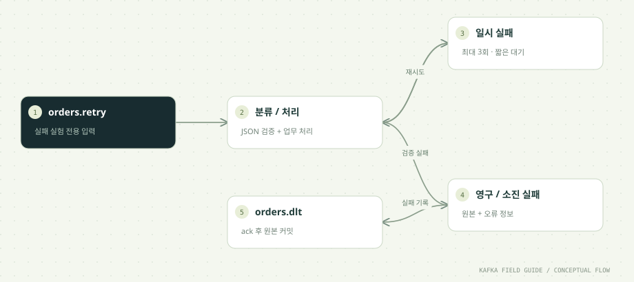

이 단원을 마치면
- 재시도 가능한 실패를 구분한다
- 무한 재시도 대신 횟수와 시간을 제한한다
- DLT 발행 실패 시 원본 offset을 커밋하지 않는다
01 / UNDERSTAND먼저, 원리를 이해합니다.
모든 실패가 재시도로 해결되지는 않습니다
일시적인 연결 실패는 다시 시도할 가치가 있지만 잘못된 JSON이나 지원하지 않는 이벤트 버전은 같은 데이터를 반복해도 성공하지 않습니다. 코드의 RETRY_ONCE는 첫 시도만 실패하는 외부 서비스의 대역입니다.
재시도에는 비용과 순서 영향이 있습니다
같은 레코드를 잠시 기다리며 재시도하면 그 Consumer의 다른 처리가 지연됩니다. 이 실습은 최대 3회, 짧은 지수 대기로 제한합니다. 운영에서는 jitter, 총 시간 예산, 대상 시스템의 멱등 API, max.poll.interval.ms를 함께 검토합니다.
DLT는 실패를 관찰하고 복구하는 수단입니다
Dead Letter Topic에는 원본 값, key, source topic/partition/offset, 오류 종류와 시도 횟수를 저장합니다. 운영 DLT에는 개인정보가 포함될 수 있으므로 접근 권한과 보관 정책이 필요합니다.
DLT 발행과 원본 커밋 사이에도 구간이 있습니다
DLT ack 후 원본 offset 커밋 전에 장애가 나면 DLT에도 중복이 생길 수 있습니다. 이 예제는 그 구간을 숨기지 않습니다. source-position을 중복 식별자로 쓰거나 Kafka 트랜잭션으로 두 작업을 묶을 수 있습니다.
02 / FOLLOW THE EVENT데이터의 이동을 따라갑니다.


원리를 이해하기 위한 단계 모델입니다. 네트워크 시간이나 장애 판정을 재현하지 않습니다.
03 / READ THE CODE현업 패턴을 코드로 읽습니다.
아래 코드는 함께 제공된 실행 소스에서 발췌했습니다. 전체 클래스와 설정은 소스 파일에서 확인할 수 있습니다.
while (++attempts <= 3) {
try {
OrderEvent e = OrderEvent.parse(record.value());
if (e.eventType().equals("RETRY_ONCE") && attempts == 1) throw new TransientFailure();
System.out.printf("SUCCESS event=%s attempt=%d%n", e.eventId(), attempts);
failure = null;
break;
} catch (TransientFailure e) {
failure = e;
if (attempts < 3) Thread.sleep(200L << (attempts-1));
} catch (Exception permanent) {
failure = permanent;
break;
}
}
if (failure != null) {
var envelope = new LinkedHashMap<String,Object>();
envelope.put("sourceTopic",record.topic());
envelope.put("sourcePartition",record.partition());
envelope.put("sourceOffset",record.offset());
envelope.put("sourceKey",record.key());
envelope.put("rawValue",record.value());
envelope.put("error",failure.getClass().getSimpleName());
envelope.put("attempts",Math.min(attempts,3));
ProducerRecord<String,String> dlt = new ProducerRecord<>("orders.dlt",record.key(),OrderEvent.JSON.writeValueAsString(envelope));
dlt.headers().add("source-position",(record.topic()+":"+record.partition()+":"+record.offset()).getBytes(StandardCharsets.UTF_8));
// If DLT publish fails, do NOT commit the original offset.
producer.send(dlt).get();
System.out.printf("DLT p=%d offset=%d reason=%s%n",record.partition(),record.offset(),failure.getClass().getSimpleName());
}
Settings.commitOne(consumer,record);소스: 중급/src/main/java/study/kafka/RetryConsumer.java · 32행부터
- 재시도 입력은 orders.retry로 격리해 orders를 사용하는 다른 실습을 오염시키지 않습니다. 이 토픽은 지연 재시도 큐가 아니라 테스트 입력입니다.
- 의도적으로 만든 TransientFailure만 재시도합니다. 실제 서비스에서는 예외 분류를 명시적으로 설계합니다.
- DLT send().get()이 실패하면 커밋 줄에 도달하지 않고 종료합니다. 재실행 시 원본을 다시 읽습니다.
04 / MAKE IT REAL이제, 직접 확인합니다.
PowerShell에서 저장소 루트로 이동한 뒤 실행하세요. 01단원의 up → build → init이 선행되어야 합니다. 종료된 환경은 up으로 다시 시작합니다. 이후 단원의 max=0은 입력이 끊긴 뒤 25초까지 읽습니다. 대응 실습 안내 파일 ↗
01. 실패 이벤트 3건 준비
.\실습\study.ps1 run poisonSEEDED 3 records가 출력됩니다.
02. 처리
.\실습\study.ps1 run retry retry-day07 3SUCCESS attempt=2가 1건, DLT 로그가 2건 출력됩니다.
03. 실패 기록 보기
.\실습\study.ps1 run consumer dlt-reader-day07 0 orders.dltsourceOffset, rawValue, error, attempts를 확인합니다.
한 걸음 더 실험하기
- poison을 반복했다면 max=3은 누적 데이터 중 앞 3건만 처리합니다. max=0으로 모두 읽어 차이를 확인하세요.
- 잘못된 데이터를 무조건 정상 토픽에 돌려보내는 무한 재처리 구조의 문제를 적어보세요.
05 / CHECK YOUR UNDERSTANDING설명할 수 있으면, 내 지식입니다.
DLT 전송이 실패했을 때 원본 offset은?
원리를 읽고 실습 결과를 확인했나요?
학습 기록은 이 브라우저에만 저장됩니다.